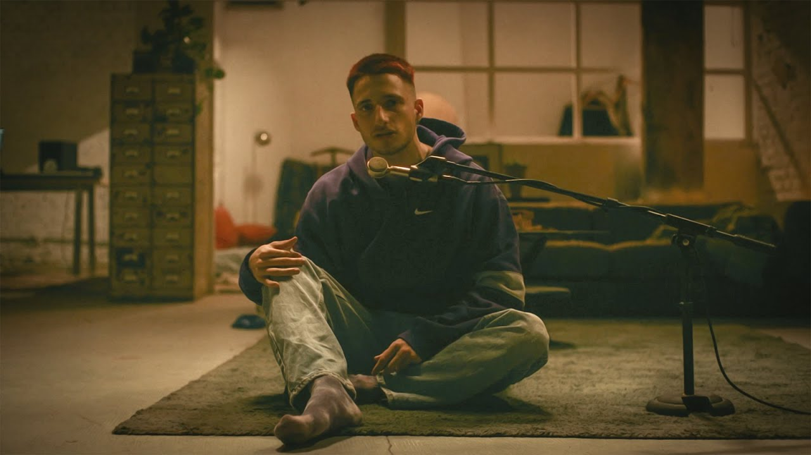

Cancionero


Andromeda
WOS

¿Qué no soy el mismo? Obvio que cambio
Si suena otra música es distinto lo que bailo
Yo si tengo los huevos para hacerme cargo
Me adapto, vuelo, rapto, no le escapo al contacto
Sé que soy de vidrio y que puedo romperme fácil
No tengo delirios pero casi
No tengo delirios pero
Sé que hay golpes que aguanto y otros no tanto
Y si me caigo, no me levanto
Hoy quiero dormir acurrucado como un gato
Aparece en mi sueños por lo menos así charlamos un rato
Y, no me cuesta admitir, que aunque me dedico a las palabras
Hoy no tengo qué decir
¿De qué me sirve mentir?
Prefiero sentir la angustia y el vació de existir
Sí, quiero morir pero no sé cómo
Quiero vivir pero no sé cuánto
Morir sabiendo la mierda que somos
Y vivir hasta que se acabe el encanto
Perdón mi amor si esto te dolió
Quise morir de amor pero no me salió
Quizá solo pienso en mí y en mi bienestar
Y sea solo eso lo que me impide amar
¿No puedo amar, no puedo amar?
O solo no amo como aman los demás
¿Cómo hay que amar? ¿Hay que amar?
Hay que desarmar los preceptos echos y tirarse mar
¿Plata? Obvio que quiero
Pero la vida es un flash como para pensar solo en dinero
Si estoy solo, ¿pa' qué quiero estar primero?
Me deprime imaginarme dormir solo con mi ego
¿Cómo querés que no tenga sabor a poco?
Si esa chica me dio un beso y después me pidió una foto
Ya no sé qué tan real es lo que toco
Se me acercan y yo me construí una cerca para no volverme loco
Me preguntan "todo okay?" Saben que esta todo mal
Les respondo "todo bien" porque sé que les da igual
No pido que intentes ponerte en mi lugar
Con el tuyo es suficiente eso es mucho pa' afrontar
Entonces, no te dediques a hablar
La cosa está jodida pa' que vengas a criticar
Me viste cara de bueno y te queres zarpar
Esta vez te rompo el cuello y te lo digo literal
Hace tiempo que vengo batiendo mi posta
Así que ningún gil va a robarme la torta
La hago corta, la rebano con mis manos si el cuchillo no corta
Tu supuesta verdad me sabe a bosta
Todo muere, todo vuelve, todo se transforma
Pero tenés miedo de romper las normas
De aguantar las bombas, eso te trastorna
Hay que ser valiente para pelear con tu sombra
Inicio